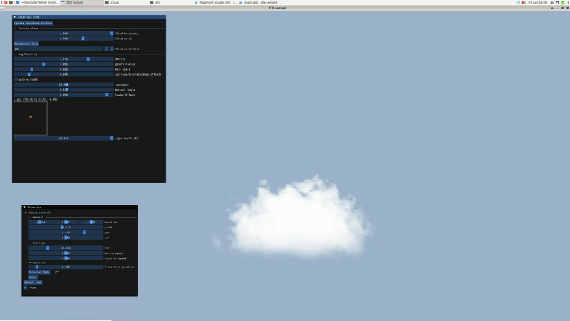

Portfolio

Volumetric Clouds
We implement volumetric clouds with ray marching and physically-based lighting (Beer–Lambert extinction, in-/out-scattering, Henyey–Greenstein phase). Generation explores three pistes: a sphere-based procedural shape (Perlin/FBM + domain warping + remap curve), a 3D noise texture pipeline, and a particle approach.
Tech: GLSL, 3D textures, ray marching, Beer–Lambert, Henyey–Greenstein, (optional) GPU particles
Sphere-based Shape
Start from a base sphere and inject noise: Perlin → FBM (multi-octave) → domain warping, then remap with an R-curve to sculpt the final density field. This yields controllable macro-shape with rich detail.
Lighting is computed by single scattering with Beer–Lambert transmittance and a Henyey–Greenstein phase function, producing soft shadows and view-dependent highlights around the light direction.
Texture 3D
Precompute a 3D noise texture (Perlin + FBM, optionally warped) and sample it along the march to drive density—simple, fast, and stable; easy to tune by frequency/amplitude per octave.
Particle
A particle cloud (impostors/voxels) updated on GPU; good for dynamic behaviors but heavier for shadows and bandwidth, so we keep it as an experimental path.

Star Engine — PBR & Engine Tools
Developed as part of the NITNINDO team project, Star Engine is a modular and optimized 3D game engine built in C++ and OpenGL. It integrates a complete Physically Based Rendering (PBR) system with environment cubemaps, light probes, and material workflow supporting albedo, normal, roughness, metalness, and AO maps.
The engine also includes scene editing tools, an in-engine photo capture system, octahedral shadow mapping, skeletal animation (keyframe interpolation, skinning via vertex shader), and a rigid-body physics module with collision layers and masks.
Tech: C++, OpenGL, GLSL, Assimp, ECS, PBR/IBL, Animation, Physics
Star Engine demonstrates a flexible entity-component architecture, real-time lighting with physically-accurate shading, octahedral shadow projection, GPU-based skinning, and an integrated editor for material and scene manipulation.

Ray Tracer in CPU
Recursive reflection & refraction, transparent and rough materials; Kd-Tree acceleration.
Tech: C++, OpenGL, BVH/Kd-Tree

Photo Mosaic
Generates photo mosaics using multiple matching strategies: average color, histogram similarity, and distribution-based matching. Supports batch processing of multiple targets.
Tech: C++/Python, image processing, KD/nearest matching, batching

Serious Game — Ebucliper (Godot)
Ebucliper is a serious game designed to teach the fundamentals of programming — instructions, loops, and functions — through hands-on construction puzzles. The player programs a robot named Blocky 2000 to rebuild the University of Montpellier campus.
Tech: Godot (GDScript), 3D grid logic, Tween animation, data persistence, UI/UX design
Gameplay
Players combine instruction blocks — move, rotate, place — to guide Blocky in building target structures within a voxel grid. Success is rewarded with stars based on efficiency and correctness.
Learning Design
Each level introduces new programming notions progressively. Players think, test, and iterate — mimicking the real coding process in an intuitive, visual way.

Game of AI (Godot)
A competitive simulation between intelligent agents. The game features Starships (collectors) and a Guardian (defender), each controlled by distinct AI strategies with tunable parameters.
Tech: Godot (GDScript), state evaluation, heuristics, simulation loop
Gameplay
Starships attempt to gather resources from the opposing zone and return safely, while the Guardian patrols to intercept them. If caught outside the safe zone, Starships lose all collected resources and respawn.
AI Strategies
Several strategies are implemented and compared: random wandering, directed pursuit, radius-based detection, and “teacher” (adaptive) agents that learn by observation. Parameters such as speed, detection radius, and chase behavior influence success rates.

Denoising Auto-Encoder with GAN
This project aims to remove noise from CIFAR-10 images using a deep learning pipeline that combines convolutional auto-encoders for feature extraction and a GAN architecture for visual quality enhancement.
Tech: Python, TensorFlow/Keras, CNN, Auto-Encoder, GAN, PSNR/SSIM evaluation